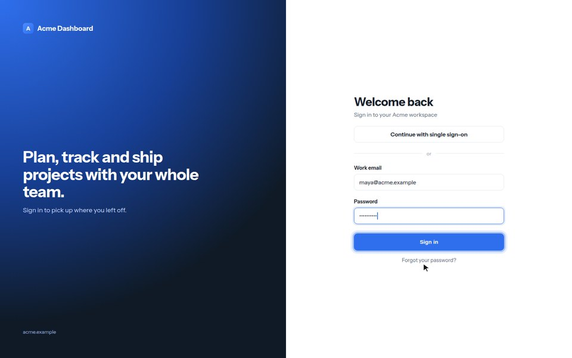
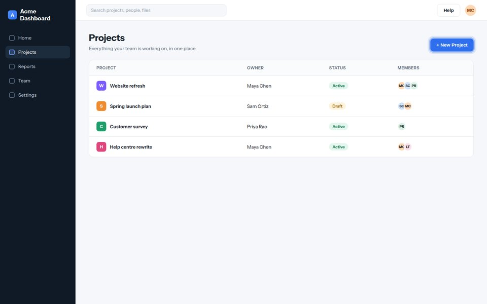
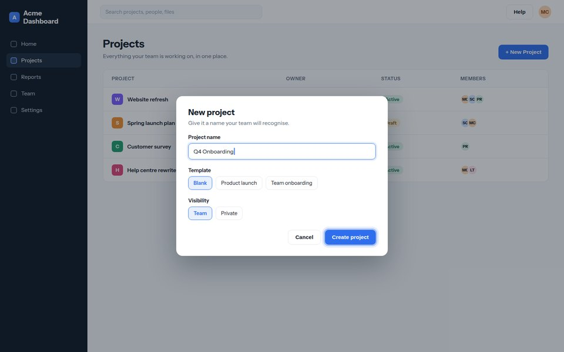
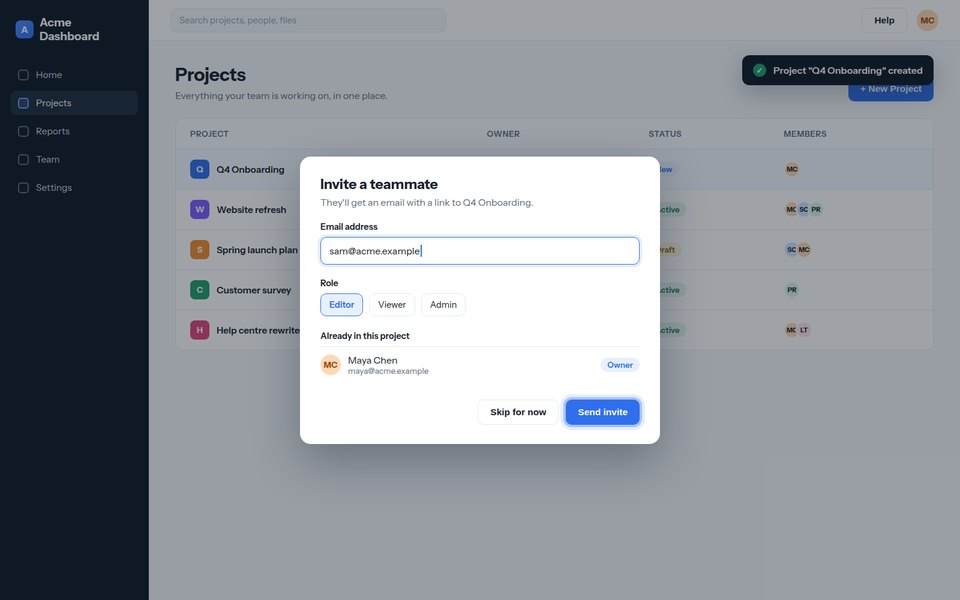
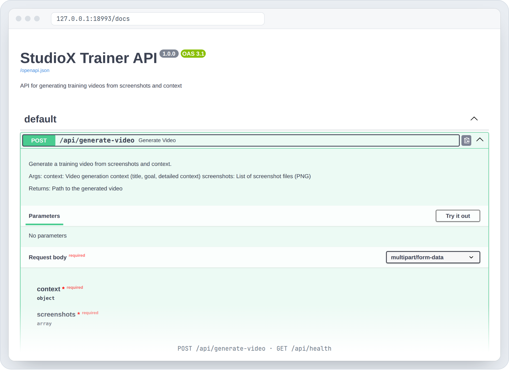

01
Vision
Describes what is on each screenshot.
GPT-4oOpenAI key
Give it a folder of screenshots and a short brief. It describes each screen, writes the narration, has a presenter read it, and cuts each screenshot in at the moment it is mentioned.
git clone https://github.com/harrythentrepreneur/screenshots-to-training-videoReal output of the compositing stage. The app and the presenter are made-up stand-ins.
The first phase writes the script. The second turns it into video. Three stages call paid APIs, and two run on your own machine.
Describes what is on each screenshot.
Writes intro, steps and outro, and tags each line with [SHOW: n].
An avatar reads the script out loud.
Finds the second each [SHOW: n] line is spoken.
Cuts screenshots in on cue and puts the presenter in a circle.
output.txtoutput.jsonTIMING.txt → processed_video.mp4 at 1920 × 1080The repo ships a small example: four screens from a made-up app called Acme Dashboard, a hand-written script and cue times, a silent placeholder presenter and a circle mask. One command runs the real VideoProcessor on them.




# needs only ffmpeg on your PATH $ python examples/run_compositing.py # -> data/output/processed_video.mp4 # 1920 x 1080 · 14 s · 4 cues # examples/acme-dashboard/TIMING.txt [SHOW: 1] Welcome to Acme Dashboard… [SHOW: 2] Open Projects from the sidebar… [SHOW: 3] Give the project a name… [SHOW: 4] Invite a teammate by email…

A real screenshot of the FastAPI docs, served by uvicorn src.api.main:app with no keys set.
| Route | What it does |
|---|---|
POST /api/generate-video | Multipart: context (title, goal, detailed_context, guide_type) and PNG screenshots. |
GET /api/health | Returns {"status": "healthy"}. |
Guide styles: TUTORIAL SOP PRODUCT_DEMO
$ git clone https://github.com/harrythentrepreneur/screenshots-to-training-video.git $ cd screenshots-to-training-video $ python -m venv .venv && source .venv/bin/activate $ pip install -r requirements.txt $ pip install openai-whisper $ cp .env.example .env # add your keys $ uvicorn src.api.main:app --reload
| OPENAI_API_KEY | Stage 1, vision |
| GOOGLE_API_KEY | Stage 2, script |
| HEYGEN_API_KEY | Stage 3, presenter |
| HEYGEN_AVATAR_ID HEYGEN_VOICE_ID | Which avatar and voice |
Inputs go in data/input/: context.txt (title, goal, detail) and screenshots/1.png, 2.png and so on.
The compositing stage made the demo on this page. The API server starts and serves its docs and health check.
Vision, script and presenter call OpenAI, Gemini and HeyGen. They were not run for this page.
Install openai-whisper for timing. The API's last step uses older argument names, so a full API run stops at compositing. Details in the README.